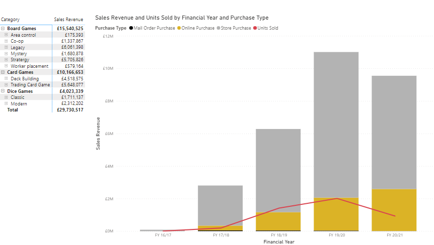

- With the matrix visual selected, click on the Format option, expand the Lines/Columns drop downs and update the colours so that you can
clearly see the units sold, here are the colours we picked:
- Use the ellipsis (…) at the top-right of the line and stacked
column chart visual to sort by Financial Year in Ascending order

- It is interesting that our units sold dips in financial year 20/21, however in our dataset, our
records go up to March 2020 and therefore have ¾ less sales months than the full 2019 year
- Make any remaining formatting changes you wish, remember to select the Sales
Summary page (to ensure when we save the report it opens on this page) then click Save
at the top left of the report and you are done!